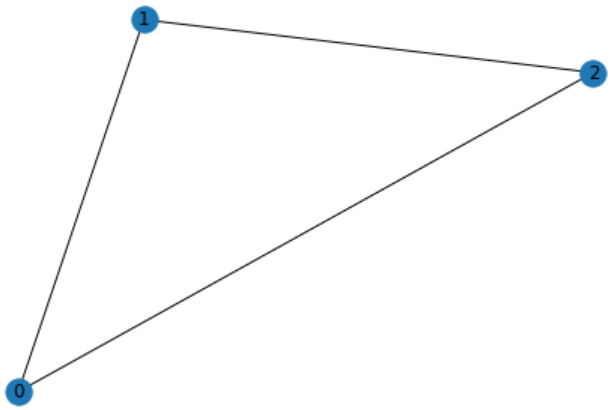
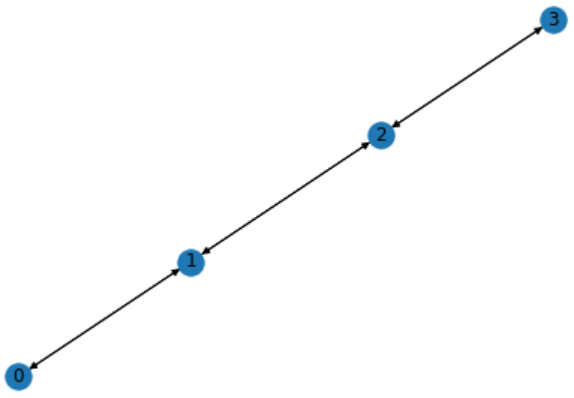
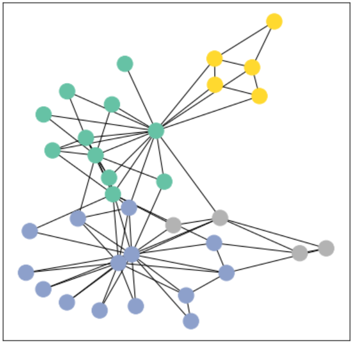
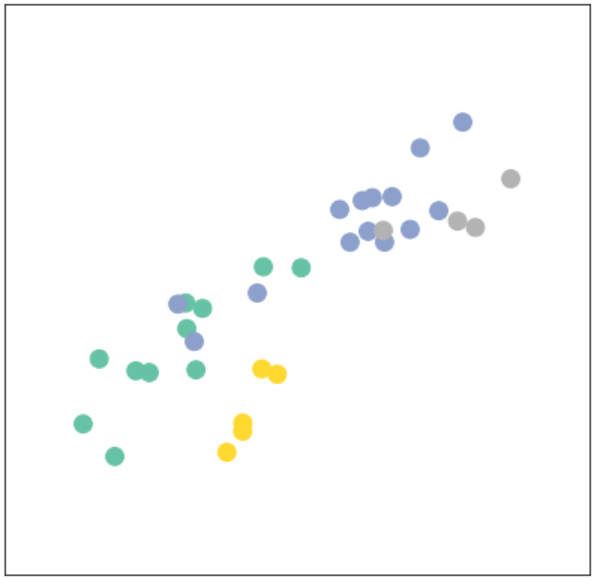
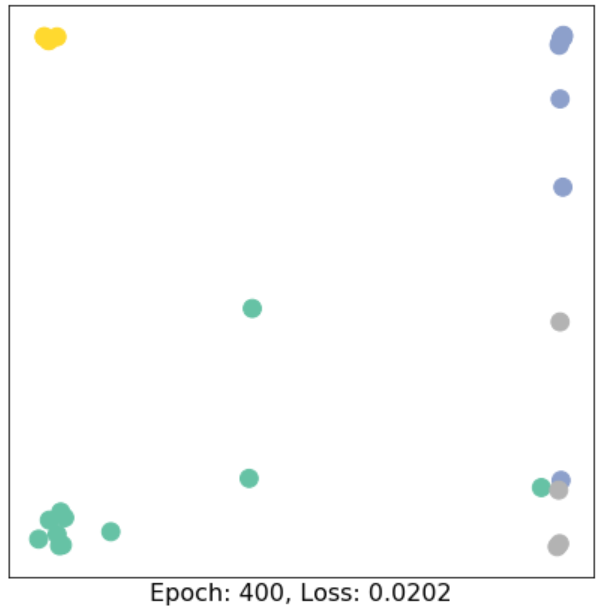

在这一节中，我们将介绍两个package: NetworkX和PyTorch Geometric。
本文主要参考资料为CS224W的Colab0。
NetworkX
NetworkX可以定义无向图、有向图，可以定义graph level的特征
# Create an undirected graph G
G = nx.Graph()
print(G.is_directed())
# Create a directed graph H
H = nx.DiGraph()
print(H.is_directed())
# Add graph level attribute
G.graph["Name"] = "Bar"
print(G.graph)`
Output:
False
True
{'Name': 'Bar'}
定义节点并添加特征和label
# Add one node with node level attributes
G.add_node(0, feature=0, label=0)
# Get attributes of the node 0
node_0_attr = G.nodes[0]
print("Node 0 has the attributes {}".format(node_0_attr))
# Add multiple nodes with attributes
G.add_nodes_from([
(1, {"feature": 1, "label": 1}),
(2, {"feature": 2, "label": 2})
])
# Loop through all the nodes
# Set data=True will return node attributes
for node in G.nodes(data=True):
print(node)
# Get number of nodes
num_nodes = G.number_of_nodes()
print("G has {} nodes".format(num_nodes))
Output:
Node 0 has the attributes {'feature': 0, 'label': 0}
(0, {'feature': 0, 'label': 0})
(1, {'feature': 1, 'label': 1})
(2, {'feature': 2, 'label': 2})
G has 3 nodes
定义边并赋予权重
# Add one edge with edge weight 0.5
G.add_edge(0, 1, weight=0.5)
# Get attributes of the edge (0, 1)
edge_0_1_attr = G.edges[(0, 1)]
print("Edge (0, 1) has the attributes {}".format(edge_0_1_attr))
# Add multiple edges with edge weights
G.add_edges_from([
(1, 2, {"weight": 0.3}),
(2, 0, {"weight": 0.1})
])
# Loop through all the edges
# Here there is no data=True, so only the edge will be returned
for edge in G.edges():
print(edge)
# Get number of edges
num_edges = G.number_of_edges()
print("G has {} edges".format(num_edges))
Output:
Edge (0, 1) has the attributes {'weight': 0.5}
(0, 1)
(0, 2)
(1, 2)
G has 3 edges
可视化
# Draw the graph
nx.draw(G, with_labels = True)

获取节点的度和邻居节点
node_id = 1
# Degree of node 1
print("Node {} has degree {}".format(node_id, G.degree[node_id]))
# Get neighbor of node 1
for neighbor in G.neighbors(node_id):
print("Node {} has neighbor {}".format(node_id, neighbor))
Output:
Node 1 has degree 2
Node 1 has neighbor 0
Node 1 has neighbor 2
NetworkX还提供了其他的函数如Lecture 4中介绍的PageRank
num_nodes = 4
# Create a new path like graph and change it to a directed graph
G = nx.DiGraph(nx.path_graph(num_nodes))
nx.draw(G, with_labels = True)
# Get the PageRank
pr = nx.pagerank(G, alpha=0.8)
pr
Output:
{0: 0.17857162031103999,
1: 0.32142837968896,
2: 0.32142837968896,
3: 0.17857162031103999}

对于这样的path like graph，在$\alpha=1$时，很容易算出如果有$n$个节点，则两端节点的rank是$\frac{1}{2(n-1)}$，中间的节点rank为$\frac{1}{n-1}$。这里的alpha是衰减系数，至于具体怎么作用的课上没有介绍过，我没有细看，可查看官方文档。
PyTorch Geometric
首先是PyTorch Geometric的安装，对于PyTorch 1.8.0以上版本，只需要运行
conda install pytorch-geometric -c rusty1s -c conda-forge
即可。如果PyTorch较低，可以参考官方文档手动安装依赖包即可。
PyTorch Geometric包含了很多的数据集并且实现了很多图网络层，在这一部分会实现一个图网络来熟悉PyTorch Geometric，当然，在这里并不需要了解图网络，直接调函数即可，只是做一个例子，后续课程会对图网络进行详细的介绍。我们将会使用Zachary’s karate club数据集，根据Kipf et al. (2017)中的方法来做一个节点分类任务，将club中的成员分为不同的团体。
首先是加载数据集
from torch_geometric.datasets import KarateClub
dataset = KarateClub()
print(f'Dataset: {dataset}:')
print('======================')
print(f'Number of graphs: {len(dataset)}')
print(f'Number of features: {dataset.num_features}')
print(f'Number of classes: {dataset.num_classes}')
Output:
Dataset: KarateClub():
======================
Number of graphs: 1
Number of features: 34
Number of classes: 4
可以看到该数据集包含一个图，其中每个节点有34维的特征向量，节点总共分为4类。
data = dataset[0] # Get the first graph object.
print(data)
print('==============================================================')
# Gather some statistics about the graph.
print(f'Number of nodes: {data.num_nodes}')
print(f'Number of edges: {data.num_edges}')
print(f'Average node degree: {data.num_edges / data.num_nodes:.2f}')
print(f'Number of training nodes: {data.train_mask.sum()}')
print(f'Training node label rate: {int(data.train_mask.sum()) / data.num_nodes:.2f}')
print(f'Contains isolated nodes: {data.contains_isolated_nodes()}')
print(f'Contains self-loops: {data.contains_self_loops()}')
print(f'Is undirected: {data.is_undirected()}')
Output:
Data(edge_index=[2, 156], train_mask=[34], x=[34, 34], y=[34])
==============================================================
Number of nodes: 34
Number of edges: 156
Average node degree: 4.59
Number of training nodes: 4
Training node label rate: 0.12
Contains isolated nodes: False
Contains self-loops: False
Is undirected: True
可以进一步看到总共有34个节点，156条边，只有4个节点是有label的。Data总共包含四个attributes:边的集合、节点特征矩阵、节点label以及标记训练集的train_mask。
我们还可以借助NetworkX来可视化这个图
import torch
import networkx as nx
import matplotlib.pyplot as plt
from torch_geometric.utils import to_networkx
# Visualization function for NX graph or PyTorch tensor
def visualize(h, color, epoch=None, loss=None):
plt.figure(figsize=(7,7))
plt.xticks([])
plt.yticks([])
if torch.is_tensor(h):
h = h.detach().cpu().numpy()
plt.scatter(h[:, 0], h[:, 1], s=140, c=color, cmap="Set2")
if epoch is not None and loss is not None:
plt.xlabel(f'Epoch: {epoch}, Loss: {loss.item():.4f}', fontsize=16)
else:
nx.draw_networkx(G, pos=nx.spring_layout(G, seed=42), with_labels=False,
node_color=color, cmap="Set2")
plt.show()
G = to_networkx(data, to_undirected=True)
visualize(G, color=data.y)

接下来我们来implement图神经网络
import torch
from torch.nn import Linear
from torch_geometric.nn import GCNConv
class GCN(torch.nn.Module):
def init(self):
super(GCN, self).init()
torch.manual_seed(12345)
self.conv1 = GCNConv(dataset.num_features, 4)
self.conv2 = GCNConv(4, 4)
self.conv3 = GCNConv(4, 2)
self.classifier = Linear(2, dataset.num_classes)
def forward(self, x, edge_index):
h = self.conv1(x, edge_index)
h = h.tanh()
h = self.conv2(h, edge_index)
h = h.tanh()
h = self.conv3(h, edge_index)
h = h.tanh() # Final GNN embedding space.
# Apply a final (linear) classifier.
out = self.classifier(h)
return out, h
model = GCN()
print(model)
Output:
GCN(
(conv1): GCNConv(34, 4)
(conv2): GCNConv(4, 4)
(conv3): GCNConv(4, 2)
(classifier): Linear(in_features=2, out_features=4, bias=True)
)
其中在__init__中定义需要的building block，在forward中定义具体的网络结构，这里我们定义了一个三层的神经网络，每一层都跟随一个tanh激活函数。最后用一个线性分类器来进行分类。返回值为最后的embedding vector和得到的类别。
model = GCN()
_, h = model(data.x, data.edge_index)
print(f'Embedding shape: {list(h.shape)}')
visualize(h, color=data.y)
Output:
Embedding shape: [34, 2]

可以看到初始化的网络就可以将节点大致进行聚类了，这也反映了图网络可以使原图中相近的节点具有相似的embedding。
最后开始训练我们的网络，这里用了CorssEntropyLoss，注意loss的计算只是在训练集train_mask上进行的，因此这是一个半监督学习任务
import time
model = GCN()
criterion = torch.nn.CrossEntropyLoss() # Define loss criterion.
optimizer = torch.optim.Adam(model.parameters(), lr=0.01) # Define optimizer.
def train(data):
optimizer.zero_grad() # Clear gradients.
out, h = model(data.x, data.edge_index) # Perform a single forward pass.
loss = criterion(out[data.train_mask], data.y[data.train_mask]) # Compute the loss solely based on the training nodes.
loss.backward() # Derive gradients.
optimizer.step() # Update parameters based on gradients.
return loss, h
for epoch in range(401):
loss, h = train(data)
# Visualize the node embeddings every 10 epochs
if epoch % 10 == 0:
visualize(h, color=data.y, epoch=epoch, loss=loss)
time.sleep(0.3)
在400轮后，我们可以得到如下结果
